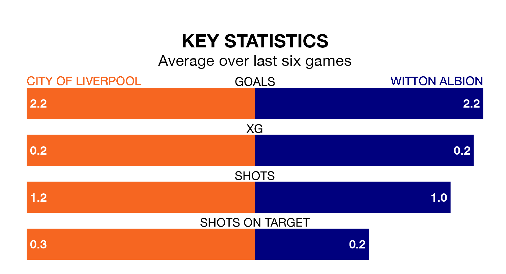

Saturday's match between City of Liverpool and Witton Albion promises to be one for the neutrals, as two of the Northern Premier League Division One West's most free-scoring sides go head-to-head.
Ahead of the game, City of Liverpool and Witton sit joint-second in the goal-scoring charts, with 64 goals apiece.
City of Liverpool are in reasonable form in the Northern Premier League Division One West, with three wins and two draws from their last six games.
With five wins and one loss over that period, Witton's form is better – they have taken 15 points from 18, compared to the hosts' 11.
Albion are fifth in the table after 37 games, of which they have won 19 and drawn five, earning 62 points.
City of Liverpool are one place behind the away side in sixth, with 16 wins and seven draws putting them on 55 points.
In the last five years, City of Liverpool and Witton have played each other on four occasions. They won one each, and they drew twice.
On average, City of Liverpool scored 0.8 goals and Witton 0.8 in those matches.
Their last meeting was on January 9, when Witton won 1-0 at home.
City of Liverpool's last match was on April 20, a 2-1 win against Nantwich Town.
Witton beat Leek Town 3-1 last time out, also on April 20.
Updated: 07:59 (UTC), 26/04/24